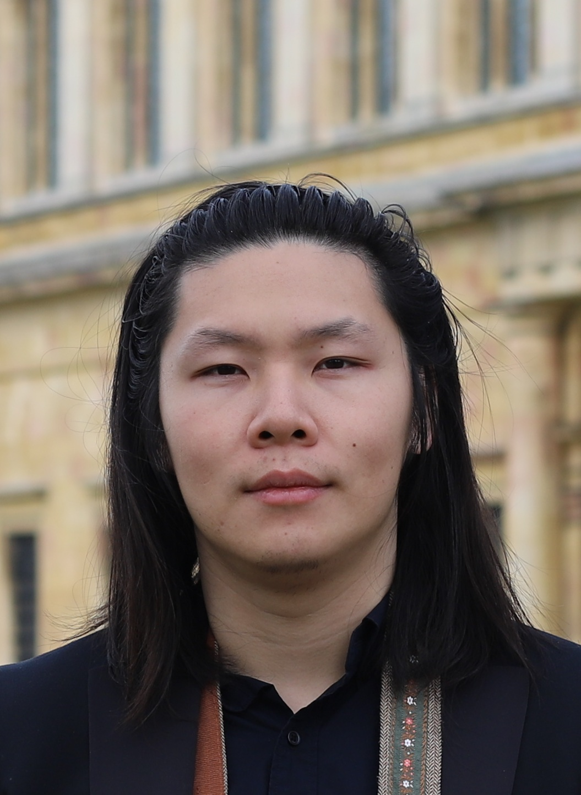

I am a Postdoctoral Research Associate in the Department of Applied Mathematics and Theoretical Physics at the University of Cambridge. My research focuses on turbulence and mixing in stratified fluids, combining direct numerical simulations with Lagrangian particle methods to understand transport processes in geophysical flows.
A complete list of publications is available on my Google Scholar profile.
Email: your.email@damtp.cam.ac.uk